2023 Higher Human Biology - Paper 2 questions
Source: Scottish Qualifications Authority (SQA) / Qualifications Scotland. This is a StemInteract HTML companion, not an official HTML edition. Extracted text is supplied alongside unaltered page images; use the images or original PDF for table layout, diagrams and symbols.
Jump to a question
PDF page 1
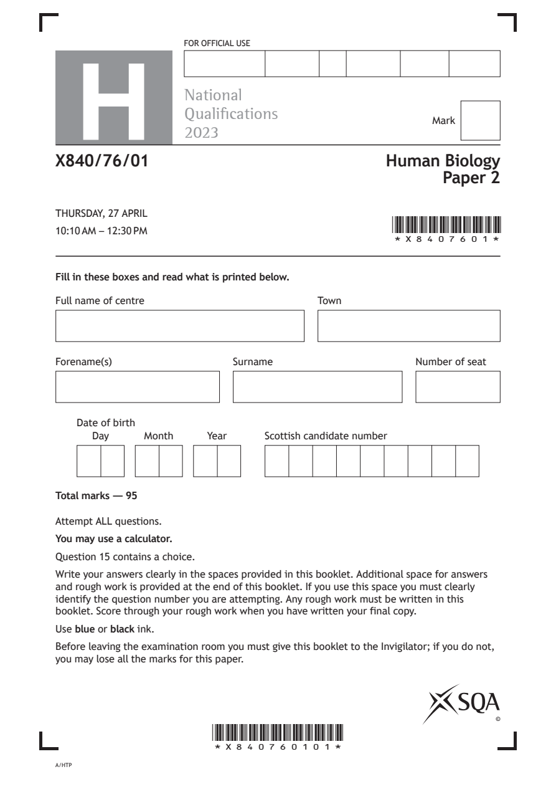
Selectable page text
FOR OFFICIAL USE
H
National
Qualications
Mark
2023
X840/76/01 Human Biology
Paper 2
THURSDAY, 27 APRIL
10:10 AM – 12:30 PM
*X8407601*
Fill in these boxes and read what is printed below.
Full name of centre Town
Forename(s) Surname Number of seat
Date of birth
Day Month Year Scottish candidate number
Total marks — 95
Attempt ALL questions.
You may use a calculator.
Question 15 contains a choice.
Write your answers clearly in the spaces provided in this booklet. Additional space for answers
and rough work is provided at the end of this booklet. If you use this space you must clearly
identify the question number you are attempting. Any rough work must be written in this
booklet. Score through your rough work when you have written your final copy.
Use blue or black ink.
Before leaving the examination room you must give this booklet to the Invigilator; if you do not,
you may lose all the marks for this paper.
©
*X840760101*
A/HTPPDF page 2
Question 1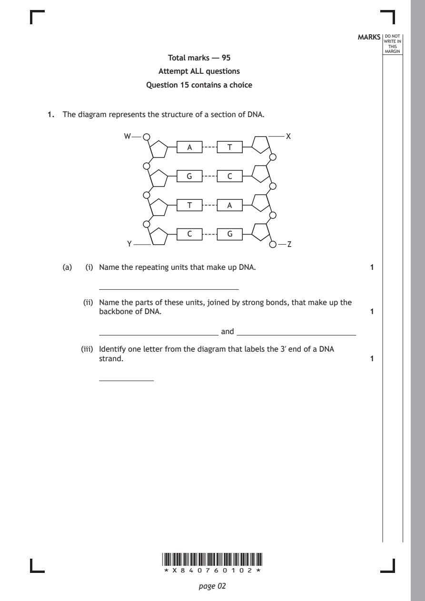
Selectable page text
MARKS DO NOT
WRITE IN
THIS
MARGIN
Total marks — 95
Attempt ALL questions
Question 15 contains a choice
1. The diagram represents the structure of a section of DNA.
W X
A T
G C
T A
C G
Y Z
(a) (i) Name the repeating units that make up DNA. 1
(ii) Name the parts of these units, joined by strong bonds, that make up the
backbone of DNA. 1
and
(iii) Identify one letter from the diagram that labels the 3′ end of a DNA
strand. 1
*X840760102*
page 02PDF page 3
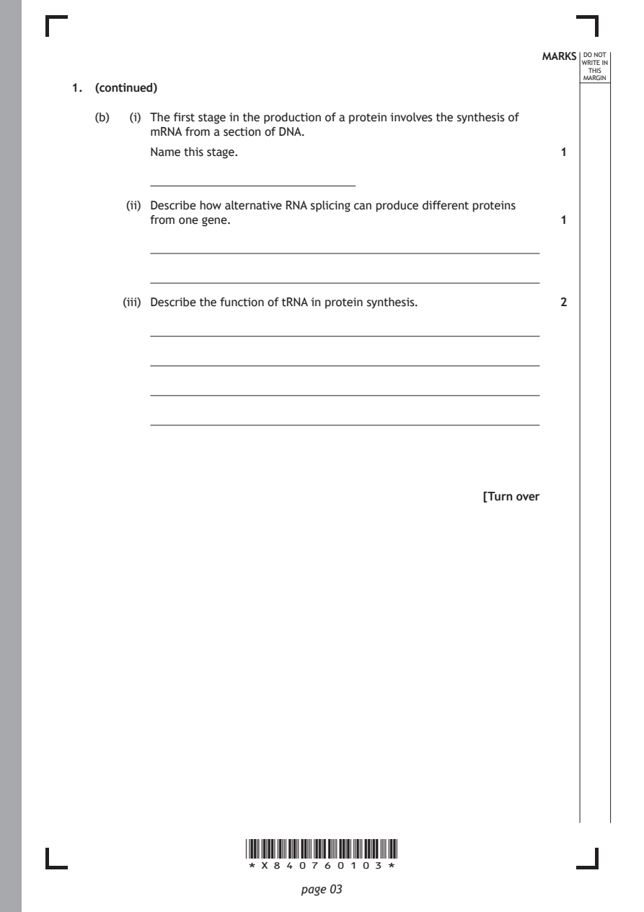
Selectable page text
MARKS DO NOT
WRITE IN
THIS
MARGIN
1. (continued)
(b) (i) The first stage in the production of a protein involves the synthesis of
mRNA from a section of DNA.
Name this stage. 1
(ii) Describe how alternative RNA splicing can produce different proteins
from one gene. 1
(iii) Describe the function of tRNA in protein synthesis. 2
[Turn over
*X840760103*
page 03PDF page 4
Question 2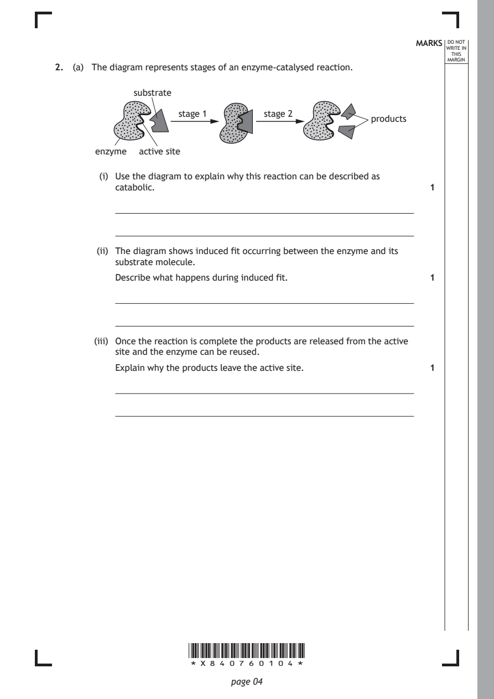
Selectable page text
MARKS DO NOT
WRITE IN
THIS
MARGIN
2. (a) The diagram represents stages of an enzyme‑catalysed reaction.
substrate
stage 1 stage 2
products
enzyme active site
(i) Use the diagram to explain why this reaction can be described as
catabolic. 1
(ii) The diagram shows induced fit occurring between the enzyme and its
substrate molecule.
Describe what happens during induced fit. 1
(iii) Once the reaction is complete the products are released from the active
site and the enzyme can be reused.
Explain why the products leave the active site. 1
*X840760104*
page 04PDF page 5
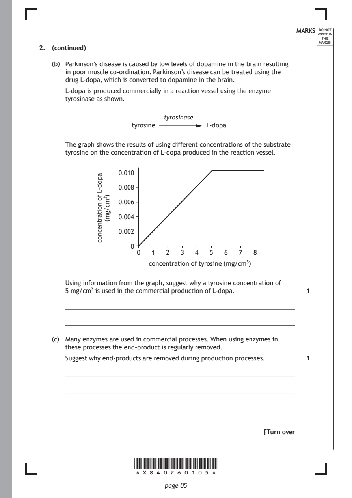
Selectable page text
MARKS DO NOT
WRITE IN
THIS
MARGIN
2. (continued)
(b) Parkinson’s disease is caused by low levels of dopamine in the brain resulting
in poor muscle co‑ordination. Parkinson’s disease can be treated using the
drug L‑dopa, which is converted to dopamine in the brain.
L‑dopa is produced commercially in a reaction vessel using the enzyme
tyrosinase as shown.
tyrosinase
tyrosine L‑dopa
The graph shows the results of using different concentrations of the substrate
tyrosine on the concentration of L‑dopa produced in the reaction vessel.
*X840760105*
page 05
apod‑L
fo
noitartnecnoc
)3mc/gm(
0.010
0.008
0.006
0.004
0.002
0
0 1 2 3 4 5 6 7 8
concentration of tyrosine (mg/cm3)
Using information from the graph, suggest why a tyrosine concentration of
5 mg/cm3 is used in the commercial production of L‑dopa. 1
(c) Many enzymes are used in commercial processes. When using enzymes in
these processes the end‑product is regularly removed.
Suggest why end‑products are removed during production processes. 1
[Turn overPDF page 6
Question 3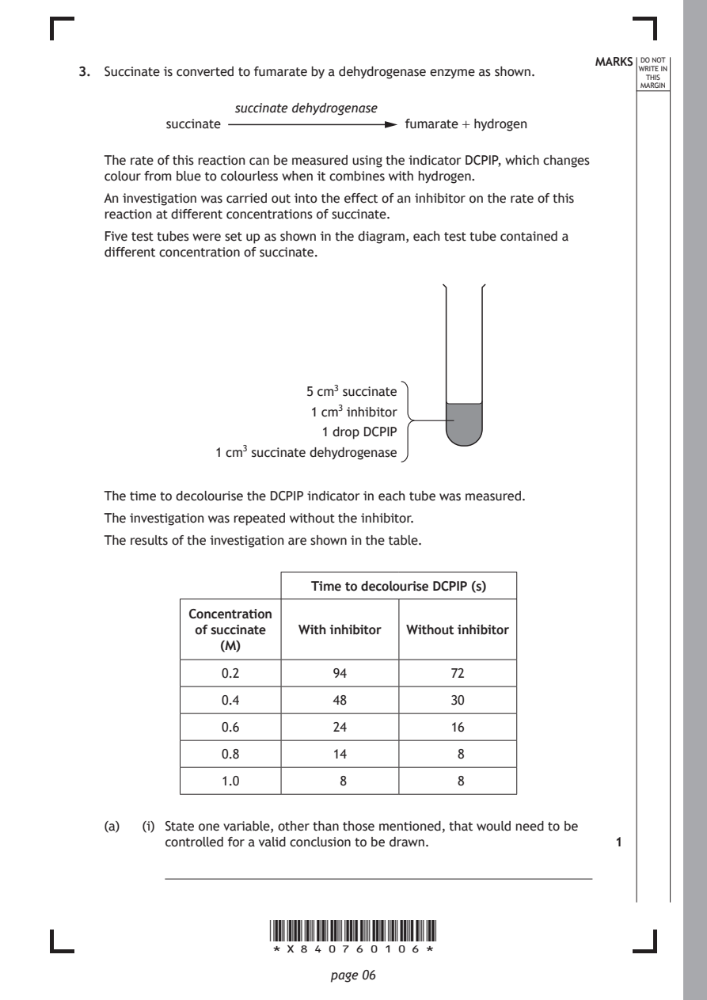
Selectable page text
MARKS DO NOT
3. Succinate is converted to fumarate by a dehydrogenase enzyme as shown. WRITE IN
THIS
MARGIN
succinate dehydrogenase
succinate fumarate + hydrogen
The rate of this reaction can be measured using the indicator DCPIP, which changes
colour from blue to colourless when it combines with hydrogen.
An investigation was carried out into the effect of an inhibitor on the rate of this
reaction at different concentrations of succinate.
Five test tubes were set up as shown in the diagram, each test tube contained a
different concentration of succinate.
5 cm3 succinate
1 cm3 inhibitor
1 drop DCPIP
1 cm3 succinate dehydrogenase
The time to decolourise the DCPIP indicator in each tube was measured.
The investigation was repeated without the inhibitor.
The results of the investigation are shown in the table.
Time to decolourise DCPIP (s)
Concentration
of succinate With inhibitor Without inhibitor
(M)
0.2 94 72
0.4 48 30
0.6 24 16
0.8 14 8
1.0 8 8
(a) (i) State one variable, other than those mentioned, that would need to be
controlled for a valid conclusion to be drawn. 1
*X840760106*
page 06PDF page 7
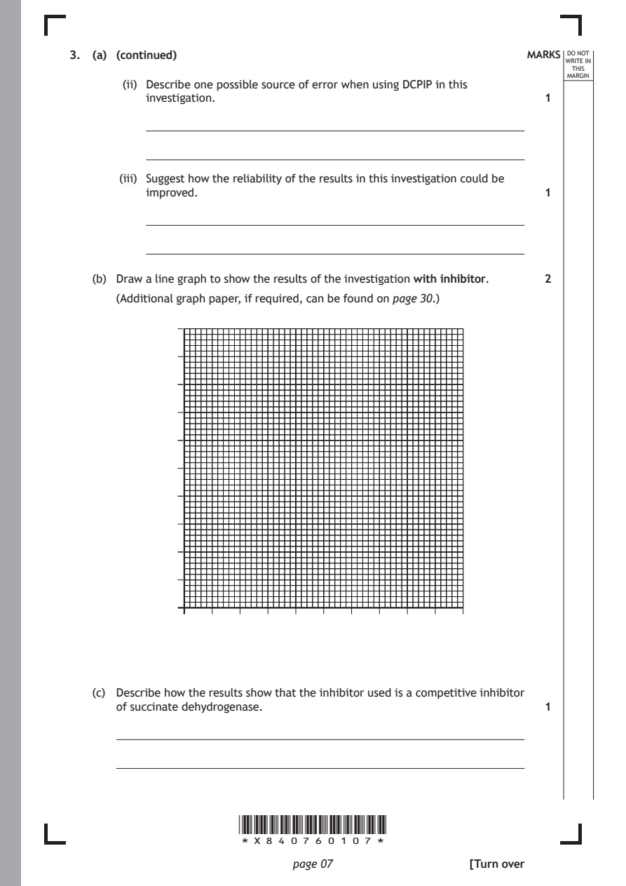
Selectable page text
3. (a) (continued) MARKS DO NOT
WRITE IN
THIS
MARGIN
(ii) Describe one possible source of error when using DCPIP in this
investigation. 1
(iii) Suggest how the reliability of the results in this investigation could be
improved. 1
(b) Draw a line graph to show the results of the investigation with inhibitor. 2
(Additional graph paper, if required, can be found on page 30.)
(c) Describe how the results show that the inhibitor used is a competitive inhibitor
of succinate dehydrogenase. 1
*X840760107*
page 07 [Turn overPDF page 8
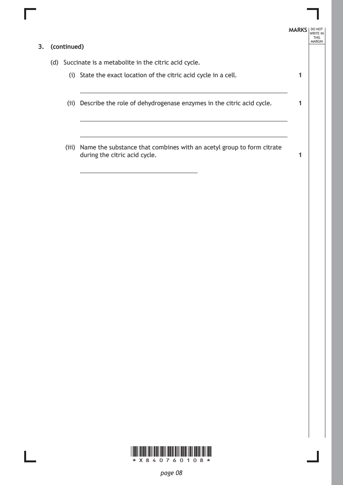
Selectable page text
MARKS DO NOT
WRITE IN
THIS
MARGIN
3. (continued)
(d) Succinate is a metabolite in the citric acid cycle.
(i) State the exact location of the citric acid cycle in a cell. 1
(ii) Describe the role of dehydrogenase enzymes in the citric acid cycle. 1
(iii) Name the substance that combines with an acetyl group to form citrate
during the citric acid cycle. 1
*X840760108*
page 08PDF page 9
Question 4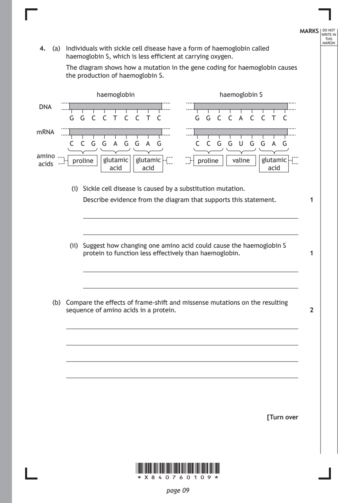
Selectable page text
MARKS DO NOT
WRITE IN
THIS
MARGIN
4. (a) Individuals with sickle cell disease have a form of haemoglobin called
haemoglobin S, which is less efficient at carrying oxygen.
The diagram shows how a mutation in the gene coding for haemoglobin causes
the production of haemoglobin S.
haemoglobin haemoglobin S
DNA
G G C C T C C T C G G C C A C C T C
mRNA
C C G G A G G A G C C G G U G G A G
amino
proline glutamic glutamic proline valine glutamic
acids
acid acid acid
(i) Sickle cell disease is caused by a substitution mutation.
Describe evidence from the diagram that supports this statement. 1
(ii) Suggest how changing one amino acid could cause the haemoglobin S
protein to function less effectively than haemoglobin. 1
(b) Compare the effects of frame‑shift and missense mutations on the resulting
sequence of amino acids in a protein. 2
[Turn over
*X840760109*
page 09PDF page 10
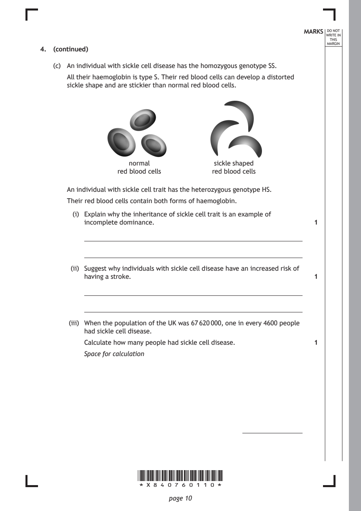
Selectable page text
MARKS DO NOT
WRITE IN
THIS
MARGIN
4. (continued)
(c) An individual with sickle cell disease has the homozygous genotype SS.
All their haemoglobin is type S. Their red blood cells can develop a distorted
sickle shape and are stickier than normal red blood cells.
normal sickle shaped
red blood cells red blood cells
An individual with sickle cell trait has the heterozygous genotype HS.
Their red blood cells contain both forms of haemoglobin.
(i) Explain why the inheritance of sickle cell trait is an example of
incomplete dominance. 1
(ii) Suggest why individuals with sickle cell disease have an increased risk of
having a stroke. 1
(iii) When the population of the UK was 67 620 000, one in every 4600 people
had sickle cell disease.
Calculate how many people had sickle cell disease. 1
Space for calculation
*X840760110*
page 10PDF page 11
Question 5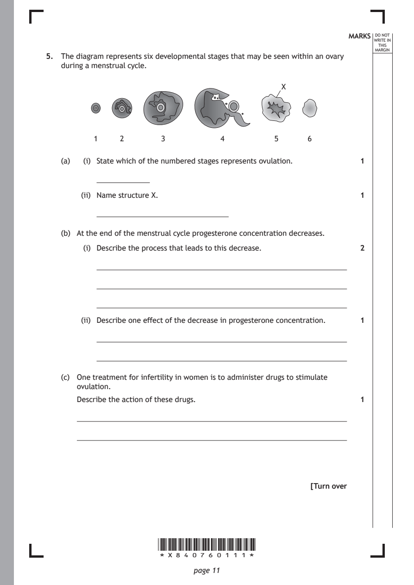
Selectable page text
MARKS DO NOT
WRITE IN
THIS
MARGIN
5. The diagram represents six developmental stages that may be seen within an ovary
during a menstrual cycle.
X
1 2 3 4 5 6
(a) (i) State which of the numbered stages represents ovulation. 1
(ii) Name structure X. 1
(b) At the end of the menstrual cycle progesterone concentration decreases.
(i) Describe the process that leads to this decrease. 2
(ii) Describe one effect of the decrease in progesterone concentration. 1
(c) One treatment for infertility in women is to administer drugs to stimulate
ovulation.
Describe the action of these drugs. 1
[Turn over
*X840760111*
page 11PDF page 12
Question 6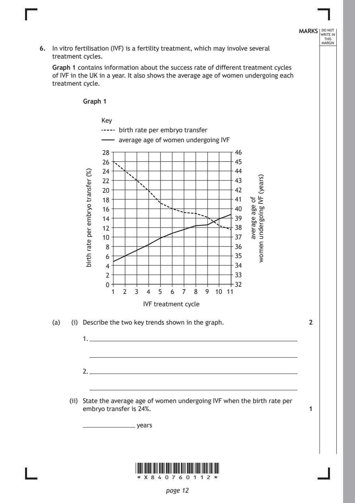
Selectable page text
MARKS DO NOT
WRITE IN
THIS
MARGIN
6. In vitro fertilisation (IVF) is a fertility treatment, which may involve several
treatment cycles.
Graph 1 contains information about the success rate of different treatment cycles
of IVF in the UK in a year. It also shows the average age of women undergoing each
treatment cycle.
Graph 1
Key
birth rate per embryo transfer
average age of women undergoing IVF
*X840760112*
page 12
)%(
refsnart
oyrbme
rep
etar
htrib
IVF treatment cycle
fo
ega
egareva
)sraey(
FVI
gniogrednu
nemow
28 46
26 45
24 44
22 43
20 42
18 41
16 40
14 39
12 38
10 37
8 36
6 35
4 34
2 33
0 32
1 2 3 4 5 6 7 8 9 10 11
(a) (i) Describe the two key trends shown in the graph. 2
1.
2.
(ii) State the average age of women undergoing IVF when the birth rate per
embryo transfer is 24%. 1
yearsPDF page 13
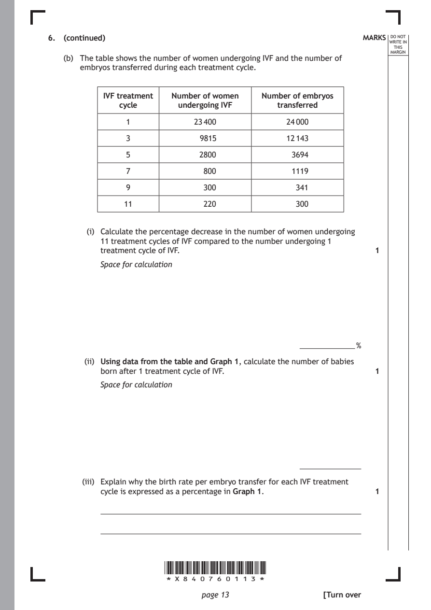
Selectable page text
6. (continued) MARKS DO NOT
WRITE IN
THIS
MARGIN
(b) The table shows the number of women undergoing IVF and the number of
embryos transferred during each treatment cycle.
IVF treatment Number of women Number of embryos
cycle undergoing IVF transferred
1 23 400 24 000
3 9815 12 143
5 2800 3694
7 800 1119
9 300 341
11 220 300
(i) Calculate the percentage decrease in the number of women undergoing
11 treatment cycles of IVF compared to the number undergoing 1
treatment cycle of IVF. 1
Space for calculation
%
(ii) Using data from the table and Graph 1, calculate the number of babies
born after 1 treatment cycle of IVF. 1
Space for calculation
(iii) Explain why the birth rate per embryo transfer for each IVF treatment
cycle is expressed as a percentage in Graph 1. 1
*X840760113*
page 13 [Turn overPDF page 14
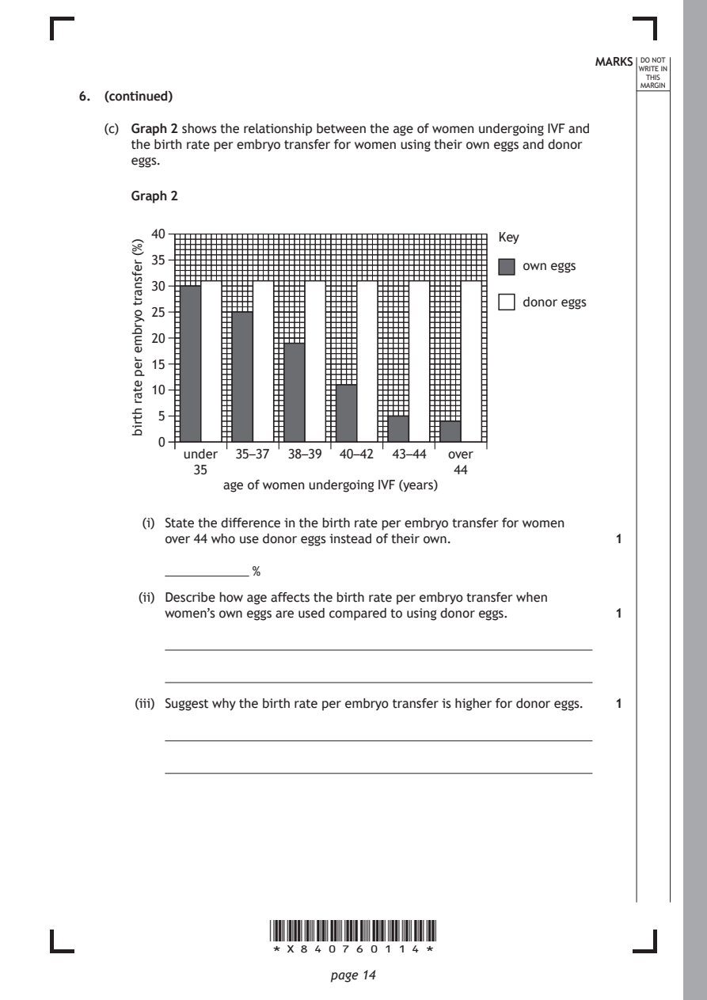
Selectable page text
MARKS DO NOT
WRITE IN
THIS
MARGIN
6. (continued)
(c) Graph 2 shows the relationship between the age of women undergoing IVF and
the birth rate per embryo transfer for women using their own eggs and donor
eggs.
Graph 2
*X840760114*
page 14
)%(
refsnart
oyrbme
rep
etar
htrib
40 Key
35
own eggs
30
donor eggs
25
20
15
10
5
0
under 35–37 38–39 40–42 43–44 over
35 44
age of women undergoing IVF (years)
(i) State the difference in the birth rate per embryo transfer for women
over 44 who use donor eggs instead of their own. 1
%
(ii) Describe how age affects the birth rate per embryo transfer when
women’s own eggs are used compared to using donor eggs. 1
(iii) Suggest why the birth rate per embryo transfer is higher for donor eggs. 1PDF page 15
Question 7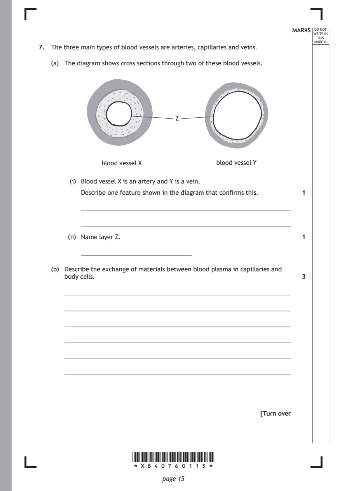
Selectable page text
MARKS DO NOT
WRITE IN
THIS
MARGIN
7. The three main types of blood vessels are arteries, capillaries and veins.
(a) The diagram shows cross sections through two of these blood vessels.
Z
blood vessel X blood vessel Y
(i) Blood vessel X is an artery and Y is a vein.
Describe one feature shown in the diagram that confirms this. 1
(ii) Name layer Z. 1
(b) Describe the exchange of materials between blood plasma in capillaries and
body cells. 3
[Turn over
*X840760115*
page 15PDF page 16
Question 8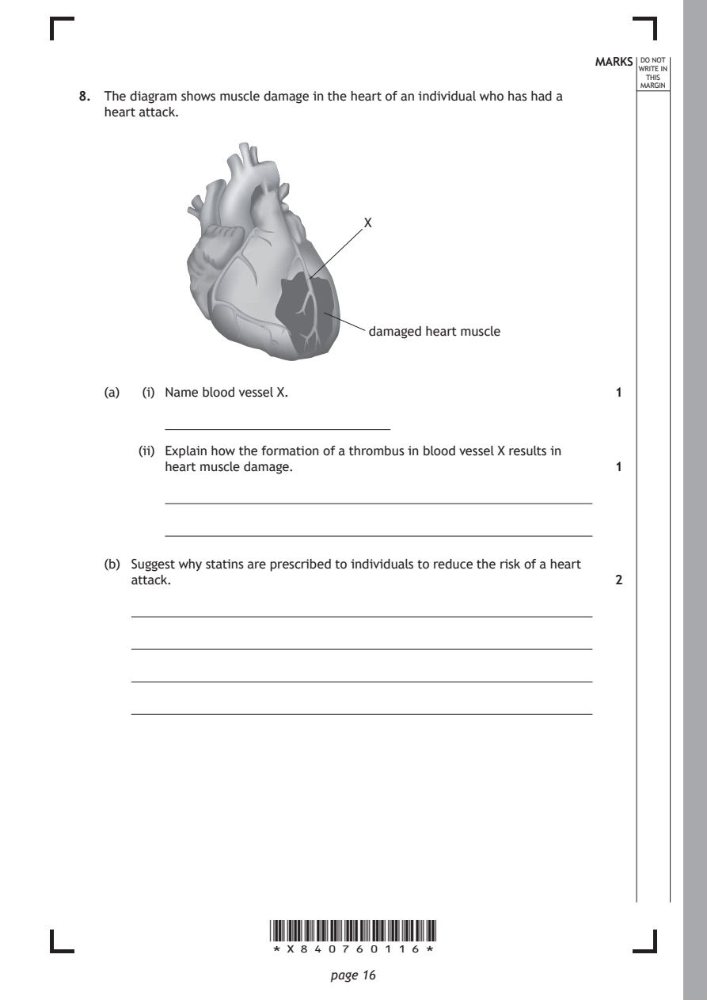
Selectable page text
MARKS DO NOT
WRITE IN
THIS
MARGIN
8. The diagram shows muscle damage in the heart of an individual who has had a
heart attack.
X
damaged heart muscle
(a) (i) Name blood vessel X. 1
(ii) Explain how the formation of a thrombus in blood vessel X results in
heart muscle damage. 1
(b) Suggest why statins are prescribed to individuals to reduce the risk of a heart
attack. 2
*X840760116*
page 16PDF page 17
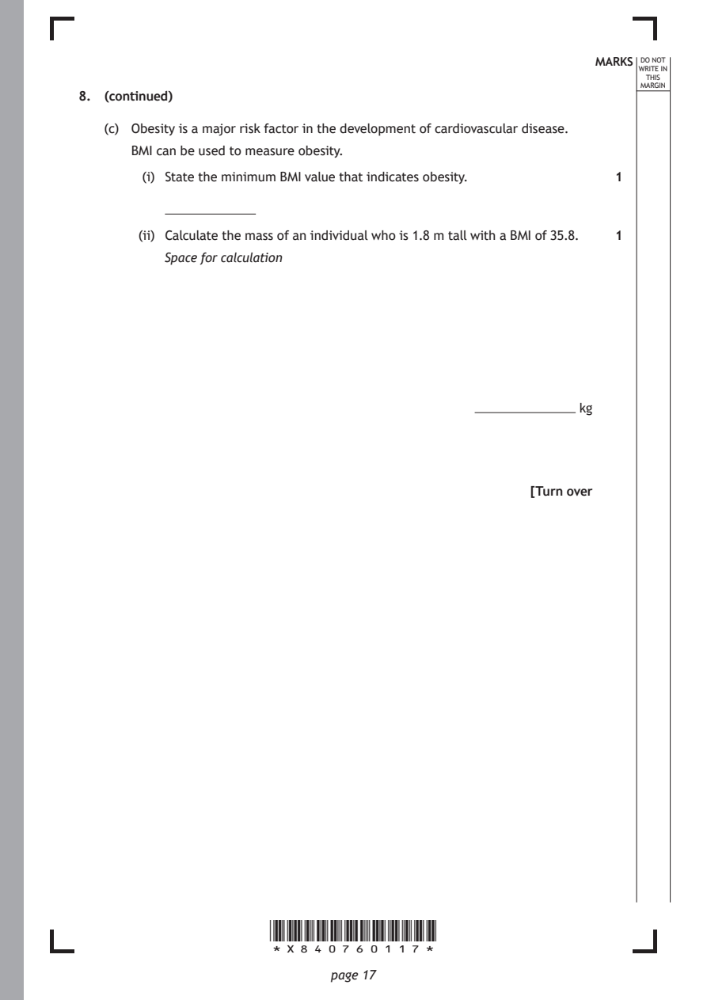
Selectable page text
MARKS DO NOT
WRITE IN
THIS
MARGIN
8. (continued)
(c) Obesity is a major risk factor in the development of cardiovascular disease.
BMI can be used to measure obesity.
(i) State the minimum BMI value that indicates obesity. 1
(ii) Calculate the mass of an individual who is 1.8 m tall with a BMI of 35.8. 1
Space for calculation
kg
[Turn over
*X840760117*
page 17PDF page 18
Question 9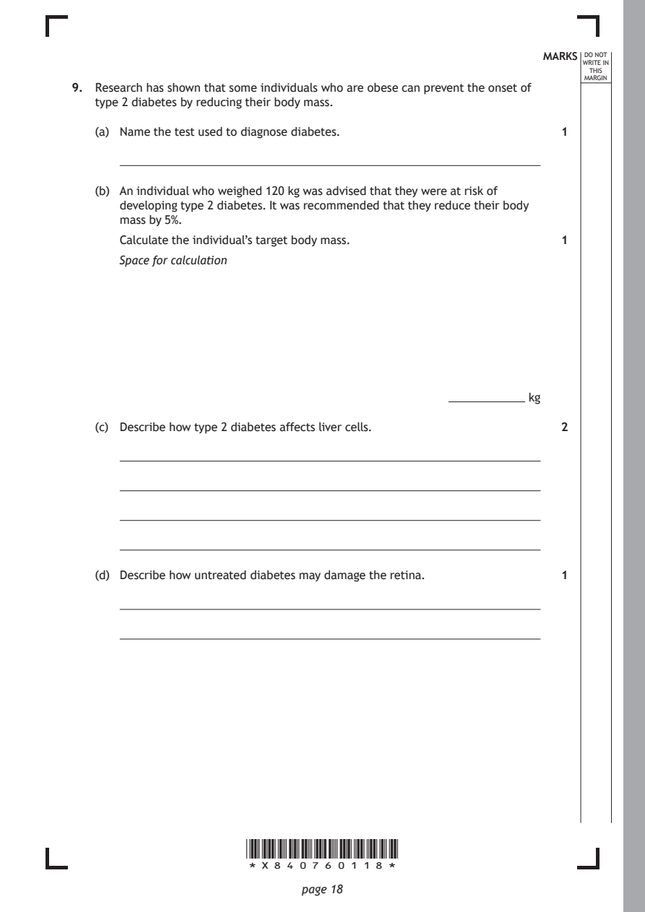
Selectable page text
MARKS DO NOT
WRITE IN
THIS
MARGIN
9. Research has shown that some individuals who are obese can prevent the onset of
type 2 diabetes by reducing their body mass.
(a) Name the test used to diagnose diabetes. 1
(b) An individual who weighed 120 kg was advised that they were at risk of
developing type 2 diabetes. It was recommended that they reduce their body
mass by 5%.
Calculate the individual’s target body mass. 1
Space for calculation
kg
(c) Describe how type 2 diabetes affects liver cells. 2
(d) Describe how untreated diabetes may damage the retina. 1
*X840760118*
page 18PDF page 19
Question 10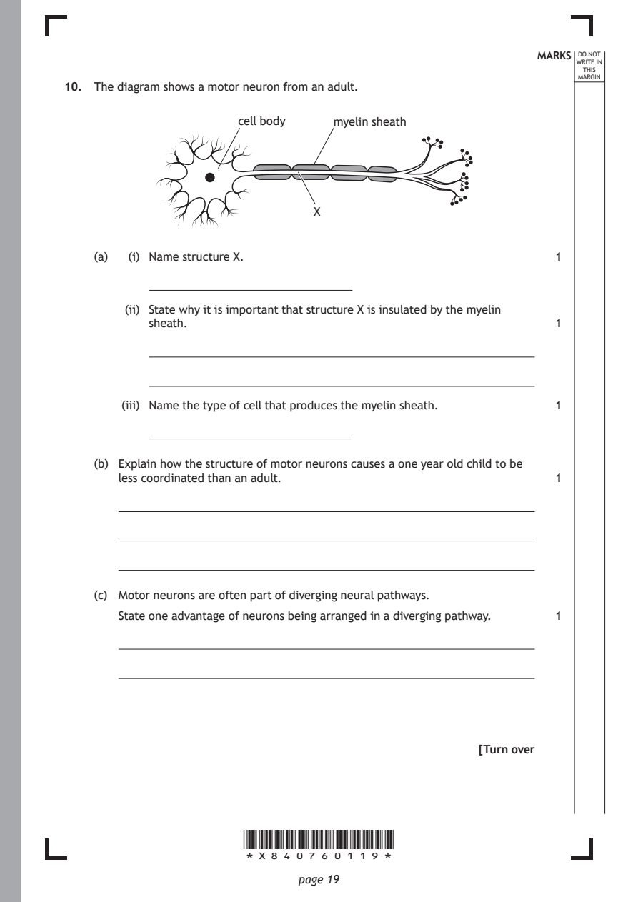
Selectable page text
MARKS DO NOT
WRITE IN
THIS
MARGIN
10. The diagram shows a motor neuron from an adult.
cell body myelin sheath
X
(a) (i) Name structure X. 1
(ii) State why it is important that structure X is insulated by the myelin
sheath. 1
(iii) Name the type of cell that produces the myelin sheath. 1
(b) Explain how the structure of motor neurons causes a one year old child to be
less coordinated than an adult. 1
(c) Motor neurons are often part of diverging neural pathways.
State one advantage of neurons being arranged in a diverging pathway. 1
[Turn over
*X840760119*
page 19PDF page 20
Question 11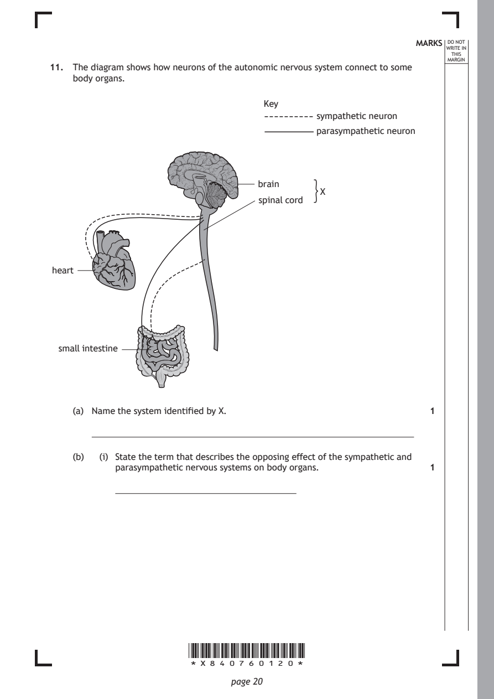
Selectable page text
MARKS DO NOT
WRITE IN
THIS
MARGIN
11. The diagram shows how neurons of the autonomic nervous system connect to some
body organs.
Key
sympathetic neuron
parasympathetic neuron
brain
X
spinal cord
heart
small intestine
(a) Name the system identified by X. 1
(b) (i) State the term that describes the opposing effect of the sympathetic and
parasympathetic nervous systems on body organs. 1
*X840760120*
page 20PDF page 21
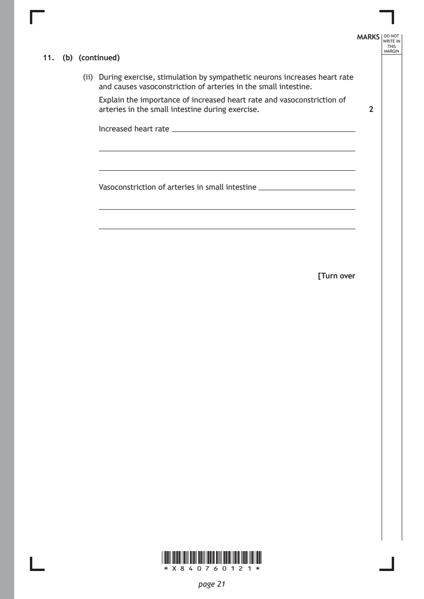
Selectable page text
MARKS DO NOT
WRITE IN
THIS
MARGIN
11. (b) (continued)
(ii) During exercise, stimulation by sympathetic neurons increases heart rate
and causes vasoconstriction of arteries in the small intestine.
Explain the importance of increased heart rate and vasoconstriction of
arteries in the small intestine during exercise. 2
Increased heart rate
Vasoconstriction of arteries in small intestine
[Turn over
*X840760121*
page 21PDF page 22
Question 12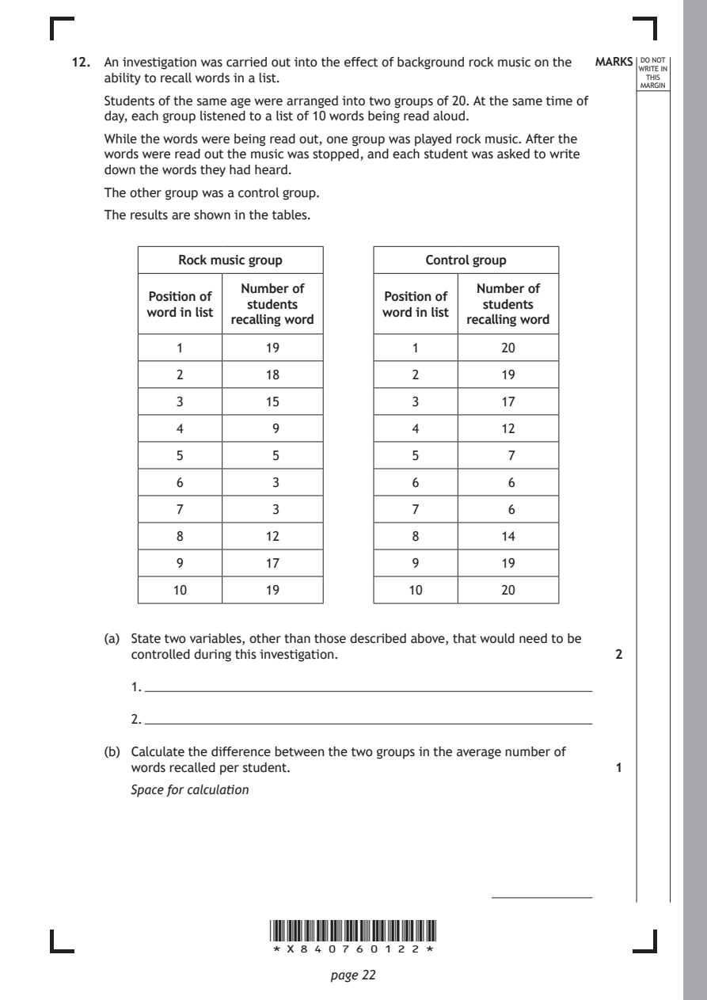
Selectable page text
12. An investigation was carried out into the effect of background rock music on the MARKS DO NOT
WRITE IN
ability to recall words in a list. THIS
MARGIN
Students of the same age were arranged into two groups of 20. At the same time of
day, each group listened to a list of 10 words being read aloud.
While the words were being read out, one group was played rock music. After the
words were read out the music was stopped, and each student was asked to write
down the words they had heard.
The other group was a control group.
The results are shown in the tables.
Rock music group Control group
Number of Number of
Position of Position of
students students
word in list word in list
recalling word recalling word
1 19 1 20
2 18 2 19
3 15 3 17
4 9 4 12
5 5 5 7
6 3 6 6
7 3 7 6
8 12 8 14
9 17 9 19
10 19 10 20
(a) State two variables, other than those described above, that would need to be
controlled during this investigation. 2
1.
2.
(b) Calculate the difference between the two groups in the average number of
words recalled per student. 1
Space for calculation
*X840760122*
page 22PDF page 23
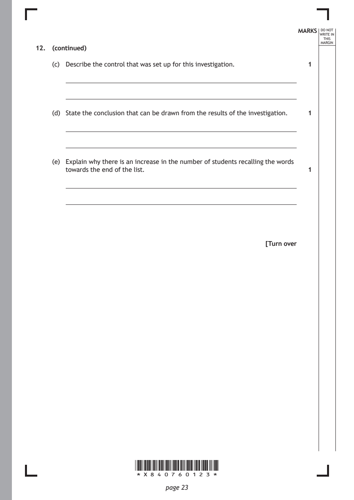
Selectable page text
MARKS DO NOT
WRITE IN
THIS
MARGIN
12. (continued)
(c) Describe the control that was set up for this investigation. 1
(d) State the conclusion that can be drawn from the results of the investigation. 1
(e) Explain why there is an increase in the number of students recalling the words
towards the end of the list. 1
[Turn over
*X840760123*
page 23PDF page 24
Question 13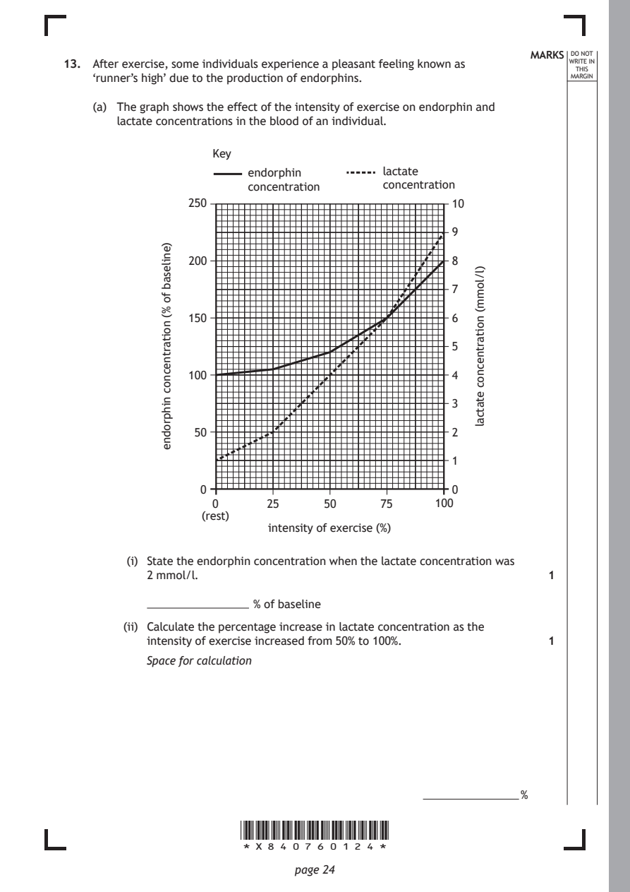
Selectable page text
MARKS DO NOT
13. After exercise, some individuals experience a pleasant feeling known as WRITE IN
THIS
‘runner’s high’ due to the production of endorphins. MARGIN
(a) The graph shows the effect of the intensity of exercise on endorphin and
lactate concentrations in the blood of an individual.
*X840760124*
page 24
)enilesab
fo
%(
noitartnecnoc
nihprodne
intensity of exercise (%)
)l/lomm(
noitartnecnoc
etatcal
Key
endorphin lactate
concentration concentration
250 10
9
200 8
7
150 6
5
100 4
3
50 2
1
0 0
0 25 50 75 100
(rest)
(i) State the endorphin concentration when the lactate concentration was
2 mmol/l. 1
% of baseline
(ii) Calculate the percentage increase in lactate concentration as the
intensity of exercise increased from 50% to 100%. 1
Space for calculation
%PDF page 25
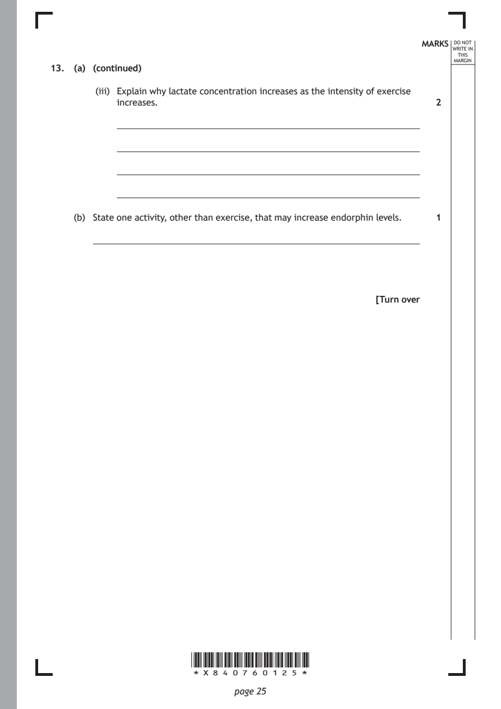
Selectable page text
MARKS DO NOT
WRITE IN
THIS
MARGIN
13. (a) (continued)
(iii) Explain why lactate concentration increases as the intensity of exercise
increases. 2
(b) State one activity, other than exercise, that may increase endorphin levels. 1
[Turn over
*X840760125*
page 25PDF page 26
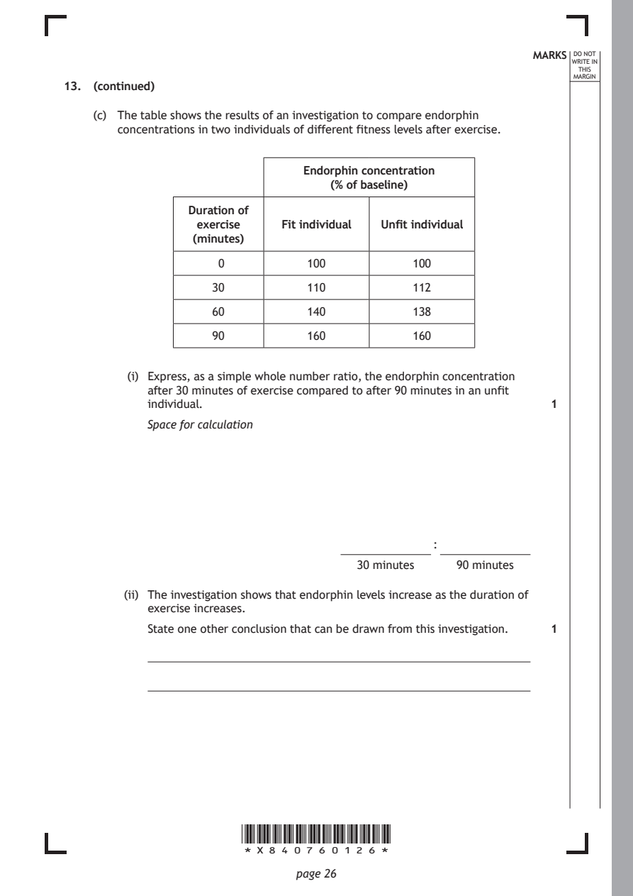
Selectable page text
MARKS DO NOT
WRITE IN
THIS
MARGIN
13. (continued)
(c) The table shows the results of an investigation to compare endorphin
concentrations in two individuals of different fitness levels after exercise.
Endorphin concentration
(% of baseline)
Duration of
exercise Fit individual Unfit individual
(minutes)
0 100 100
30 110 112
60 140 138
90 160 160
(i) Express, as a simple whole number ratio, the endorphin concentration
after 30 minutes of exercise compared to after 90 minutes in an unfit
individual. 1
Space for calculation
:
30 minutes 90 minutes
(ii) The investigation shows that endorphin levels increase as the duration of
exercise increases.
State one other conclusion that can be drawn from this investigation. 1
*X840760126*
page 26PDF page 27
Question 14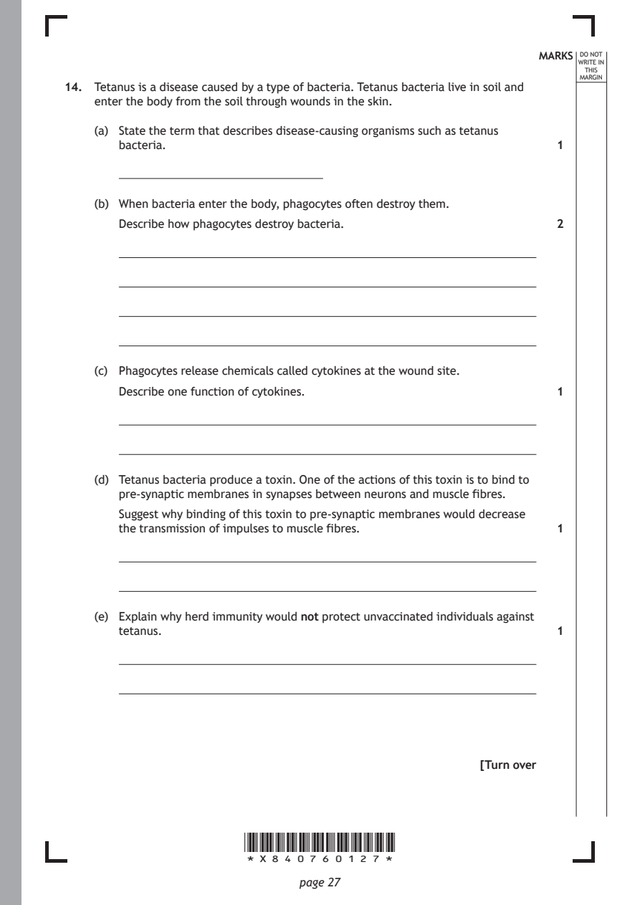
Selectable page text
MARKS DO NOT
WRITE IN
THIS
MARGIN
14. Tetanus is a disease caused by a type of bacteria. Tetanus bacteria live in soil and
enter the body from the soil through wounds in the skin.
(a) State the term that describes disease‑causing organisms such as tetanus
bacteria. 1
(b) When bacteria enter the body, phagocytes often destroy them.
Describe how phagocytes destroy bacteria. 2
(c) Phagocytes release chemicals called cytokines at the wound site.
Describe one function of cytokines. 1
(d) Tetanus bacteria produce a toxin. One of the actions of this toxin is to bind to
pre‑synaptic membranes in synapses between neurons and muscle fibres.
Suggest why binding of this toxin to pre‑synaptic membranes would decrease
the transmission of impulses to muscle fibres. 1
(e) Explain why herd immunity would not protect unvaccinated individuals against
tetanus. 1
[Turn over
*X840760127*
page 27PDF page 28
Question 15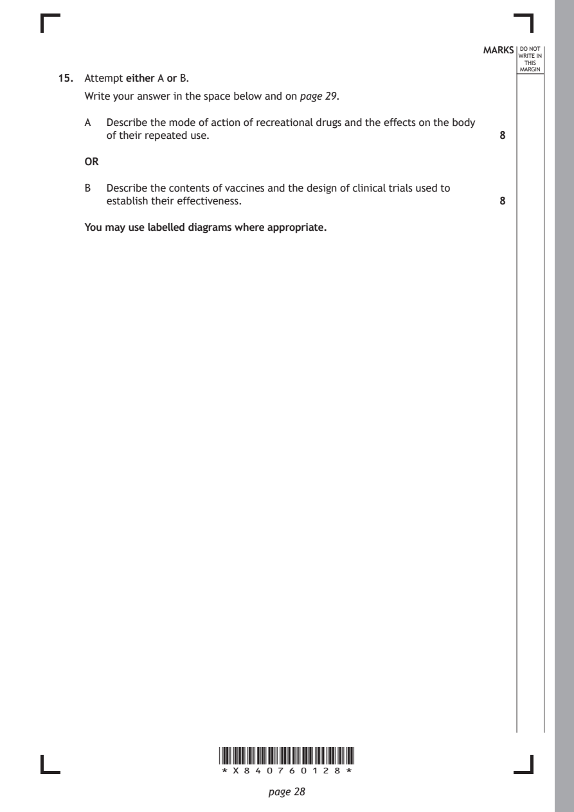
Selectable page text
MARKS DO NOT
WRITE IN
THIS
MARGIN
15. Attempt either A or B.
Write your answer in the space below and on page 29.
A Describe the mode of action of recreational drugs and the effects on the body
of their repeated use. 8
OR
B Describe the contents of vaccines and the design of clinical trials used to
establish their effectiveness. 8
You may use labelled diagrams where appropriate.
*X840760128*
page 28PDF page 29
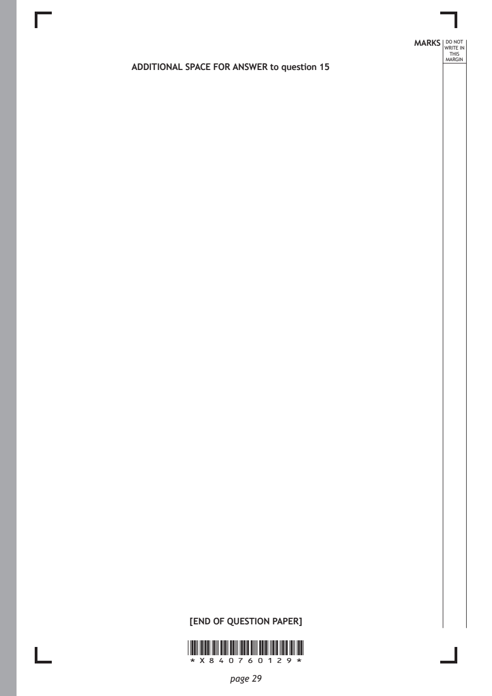
Selectable page text
MARKS DO NOT
WRITE IN
THIS
MARGIN
ADDITIONAL SPACE FOR ANSWER to question 15
[END OF QUESTION PAPER]
*X840760129*
page 29PDF page 30
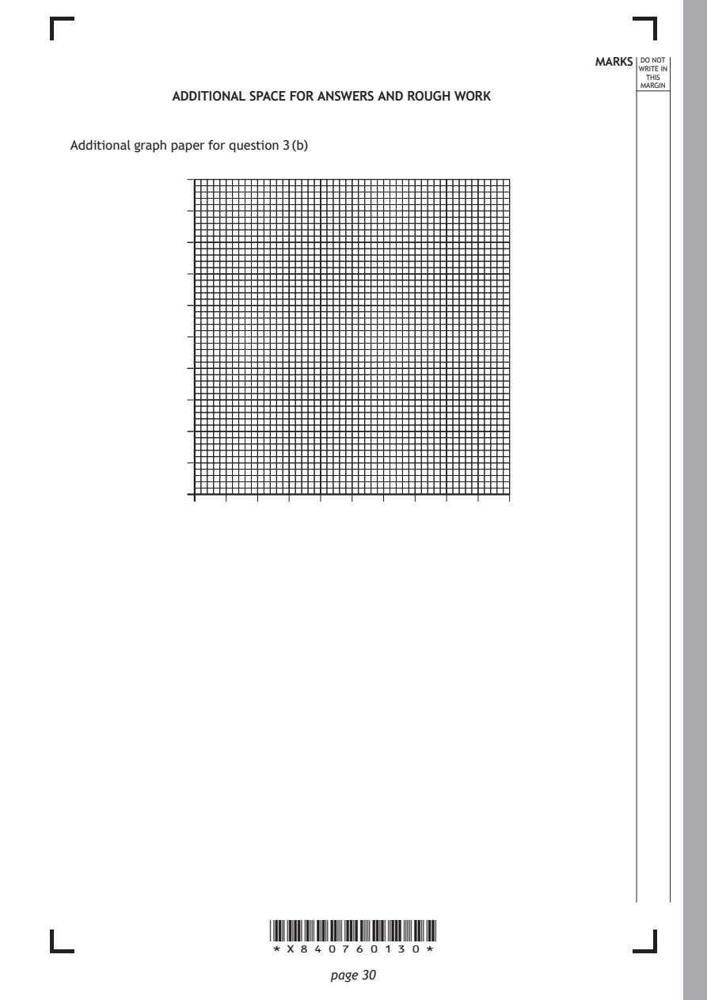
Selectable page text
MARKS DO NOT
WRITE IN
THIS
MARGIN
ADDITIONAL SPACE FOR ANSWERS AND ROUGH WORK
Additional graph paper for question 3 (b)
*X840760130*
page 30PDF page 31
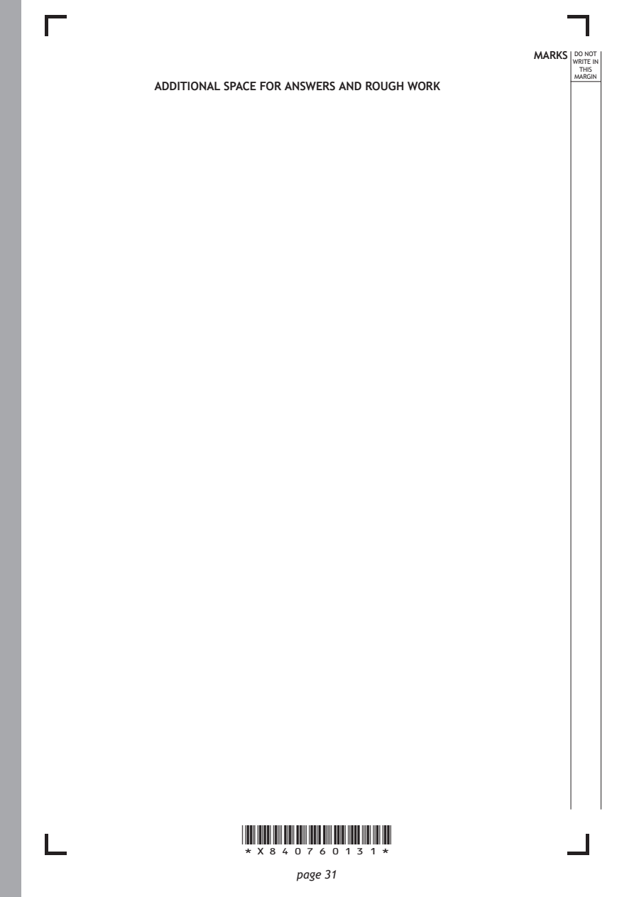
Selectable page text
MARKS DO NOT
WRITE IN
THIS
MARGIN
ADDITIONAL SPACE FOR ANSWERS AND ROUGH WORK
*X840760131*
page 31PDF page 32
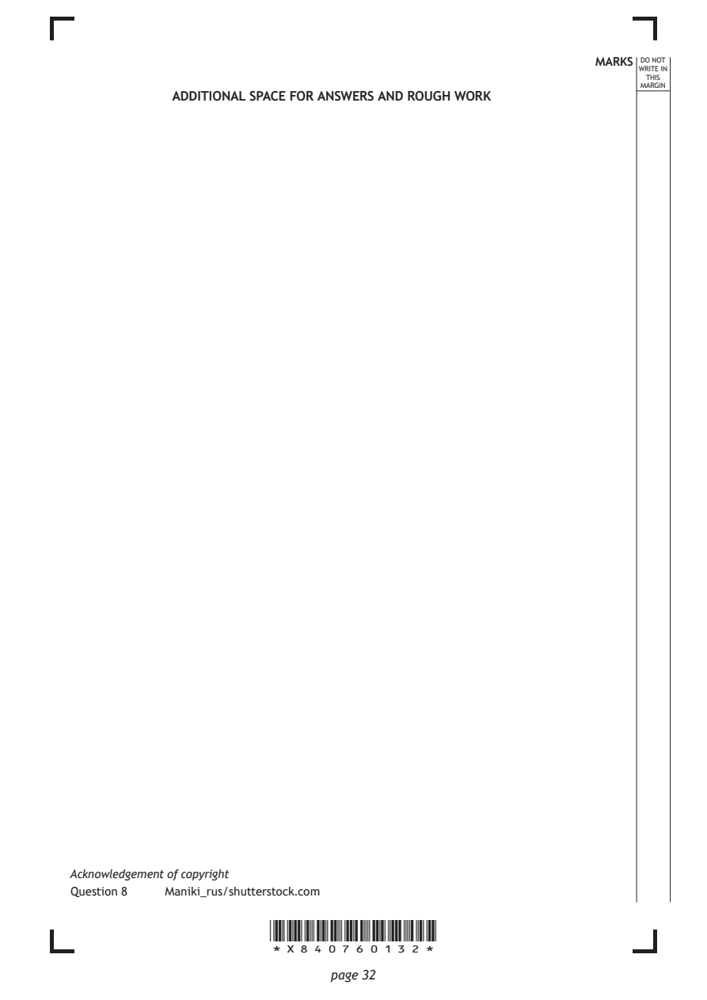
Selectable page text
MARKS DO NOT
WRITE IN
THIS
MARGIN
ADDITIONAL SPACE FOR ANSWERS AND ROUGH WORK
Acknowledgement of copyright
Question 8 Maniki_rus/shutterstock.com
*X840760132*
page 32